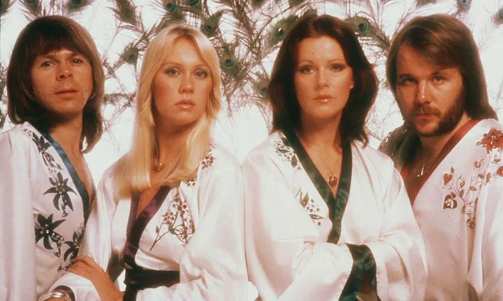

Švedska grupa ABBA postala je simbol savršenstva pop produkcije i jedna od najprodavanijih grupa u povijesti. Pobjedom na Euroviziji 1974. godine započeli su globalni uspon koji je trajao desetljeće, a njihove pjesme poput "Dancing Queen" i "Mamma Mia" ostale su vječni klasici. Njihova glazba kombinira bogate vokalne harmonije, zarazne ritmove i često sjetne tekstove, što ih čini miljenicima publike svih generacija.
